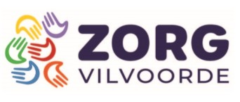

NIS 2 Support

Beveiliging is de kern van elke moderne onderneming. Met de komst van NIS2 worden de cybersecurity-eisen voor veel sectoren aanzienlijk uitgebreid. Wij bieden gespecialiseerde ondersteuning bij het in kaart brengen van je digitale voetafdruk en het implementeren van de juiste beheersmaatregelen. Wij vertalen de complexe wetgeving naar praktische IT-oplossingen, zodat jij je kunt focussen op je kernactiviteiten.
Hoe gaan wij te werk?
- Welke noden heb je
- Bepalen van je cyberfundamentels niveau
- Opmaak van DRP of continuiteitsplannen
- Inhuren expertise op vaste basis (DPO/CISO)
- Opmaak van een plan naar conformiteit NIS 2
- Ondersteuning bij het opgemaakte plan
- Opvolgen van je wettelijke verplichtingen
Lopende Projecten
Zorg Vilvoorde

Bij Zorg Vilvoorde zijn wij na een een tijlange samenwerking nu ook een NIS 2 traject opgestart, zodat zij conform de NIS 2 wetgeving kunnen verder werken in 2026. Gezien zij een zorginstelling zijn is de betreffende wetgeving namelijk reeds van kracht vanaf 2026 tov 2031.
Plan van Aanpak
- Voorstelling van de verplichtingen in het kader van NIS 2 aan directieleden
- Voorstelling aan bestuursleden en vrijmaking budgetten
- Opmaak en voorstelling van de huidige situatie
- Opstart van phsing campagne en awareness pakket
Kostprijs
Voorlopige raming: 40.000 euro voor 5 jaar inclusief periodieke trainingen.
Nog vragen?
Heeft u nog vragen? U kunt ons altijd contacteren via ons e-mailadres of via ons contactformulier.